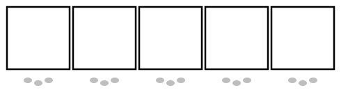
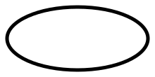
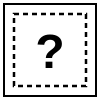
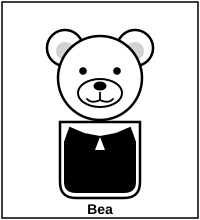
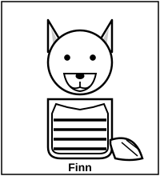
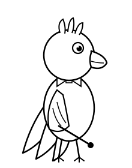

Pattern Parade — pure-SVG sample assets
Hand-coded SVG, no image API. Use this to judge whether SVG-only is good enough or whether we need Gemini Imagen for the characters.
The trade-off: SVG is free, deterministic, prints perfectly at any size, and gives us identical output every run. Image-gen API gives more polished character illustration but costs ~$5 per character family and risks style drift between shots.
Structural elements (SVG ceiling — these will look identical in production)

Parade strip (M2) — 5 cells with parade-route footprints below. Used in every lesson and every worksheet. Scales from worksheet thumbnail to wall poster without losing fidelity.

Core loop frame (M5) — placed over the repeating part of a parade strip to mark the core. Pure ellipse outline.

Missing mystery card (M4) — square card with dashed inner outline and a bold question mark. Indicates where an animal is missing.
Character elements (SVG floor — judge if good enough)
These are my best hand-coded SVG attempts. They're recognizable but unmistakably geometric — Sesame-Street simple, not Pixar polished. If the Little Programmers PDF aesthetic is your bar, this might land below it. The honest comparison is: this is what SVG-only gets you; image gen would produce richer, more illustrative characters.

Bea the Bear — solid-vest pattern (one of the four B&W vest fills used to distinguish the four animals). Round body, round ears, simple face.

Finn the Fox — striped-vest pattern. Pointed ears + bushy tail are the fox-vs-bear differentiator.

Coco the Conductor — the unit's mascot parrot. Standing pose, baton in wing, bow tie at neck, crest feathers on head. Hardest one to get charming in pure SVG.
Composition example — what an actual worksheet image looks like
This is what the build pipeline produces by overlaying the character SVGs into the parade-strip cells. The pattern shown is Bea-Finn-Bea-Finn-? — exactly Worksheet 1, Part 1.
What to do with this:
- If the structural elements (parade strip, loop, missing card) look right and the characters are good enough for K worksheets — we use SVG-only and skip Gemini entirely. ~$0 image cost across all 50 units.
- If structural is fine but characters need to be richer — we keep SVG for structural and use Gemini Imagen just for Coco + the four animals. ~$5 per unit family.
- If you want a totally different aesthetic — sketch direction and I'll iterate.